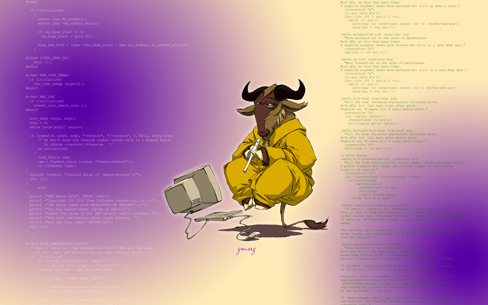

I have been lived with Emacs for 16 years and will likely continue with it in more years. I programming, write articles, and do the presentation with Emacs effectively.
I tried to escape from Emacs for some fresh experiences. I used some modern editors, such as Sublime, Atom, and VSCode.
The result is always the same. I’m more productive and more enjoyable with Emacs. Living with Emacs eventually becomes a lifestyle.
Two decades ago, most programmers were Emacs users or Vim users. Sadly, fewer and fewer programmers use these ancient editors, Emacs’s user ratio is shrinking.

Even so, I’m encouraging you to have a try on Emacs.
Something is good doesn’t mean it is popular. We should try to find the tools that suit ourselves best.
Why learning Emacs is worth it
The time we spent on Emacs is rewarding in the long term. Emacs is the most extensible editor and gives users maximum freedom. We will get the best productivity after familiar with it.
Emacs is a 45 years old software. It’s stable and with lots of packages and supports for different programming languages and all kinds of tasks.
Most Emacs users are senior developers who have mastered multiple languages. I got well programming experience with Emacs, even for those less popular programming languages, such as OCaml, Scheme, and Clojure.
Think about how much our computing life revolves around editing. Emacs will be a rewarding choice for those who will programming for years and will be open for different technology stacks.
Do you want to have a try on Emacs? Here are my five tips for you:
#1 Learning Emacs by using it
Don’t be afraid of so many commands and key bindings.
Emacs has a learning curve in the beginning.
Keep using it consistently. After some time, Your fingers and muscles will form memories, and everything you do is performed naturally.
You don’t need to write Emacs Lisp from the beginning.
Follow this best guide for mastering Emacs in one year.
#2 Start with open-source configurations
Please check out spacemacs or doom-emacs.
They are maintained by the community and have many excellent default configurations for most tasks and most programming languages.
Even more, these two projects contain handy configurations for Vim users.
The best editor is neither Emacs nor Vim. It’s Emacs and Vim!
This video is an introduction for Spacemacs:
awesome-emacs lists popular packages with all kinds of categories. It will save much of our time.
#3 Keep your finger healthy
Switch the key of Ctrl with =Caps Lock= so that your finger will feel better.
Ctrl is the modifier key for most Emacs key bindings, Caps Lock is the more proper key position for the left pinky finger.
For this reason, HHKB is an excellent gift for most Emacs users.

I bought an HHKB 8 years ago, but I don’t use it frequently. It’s a little bit inconvenient for mobility.
#4 Try org-mode
org-mode is a killer application in Emacs, it’s the reason I can not escape from Emacs and some non-programmers to use Emacs.
org-mode is a complete system to organize your project, take notes, track tasks, track time, agenda, write documents, and much more! Everything is plaintext, and you could sync them with Github or Dropbox, or export your writings into PDF, HTML, Markdown formats.
It’s your emacs-based knowledge management system!
I’m currently writing most of my blogging posts in Emacs, then sync up to my WordPress with a key binding.
Learn Emacs Org Mode: Spacemacs Intro Tutorial is a good tutorial video for you to start.
#5 Don’t use it as an operating system
After you get the fun of Emacs, you may be obsessed with it, imperceptibly.
Because of its extreme extensibility, Emacs could serve as a “Great Operating System.” It means you could write extensions to Emacs for various kinds of tasks.
You could use it to browse Web pages, play music, send Emails, you could even use it to control a coffee maker!
In some cases, I put too much time to hack Emacs for various tasks. It is OK if you have enough spare time, Emacs Lisp is also a Lisp dialect which worth exploring.
However, some tasks could be finished in Emacs does not mean it’s the best choice to do this. The job of browsing the Web pages should adopt a modern Web browser.
So, avoid being too addicted to it and put our time on more valuable stuff.
Join my Email List for more insights, It's Free!😋